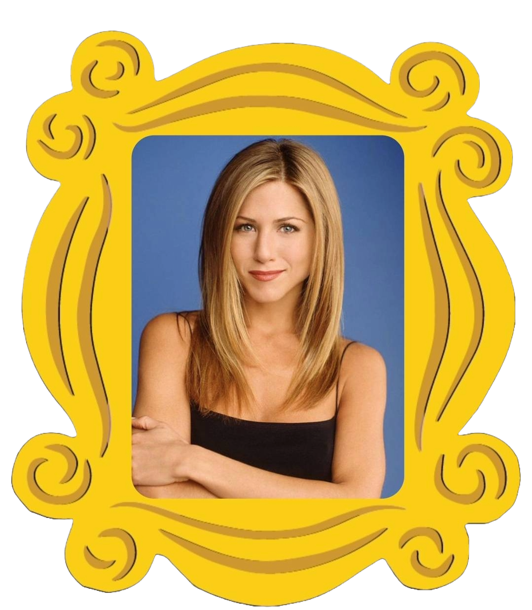
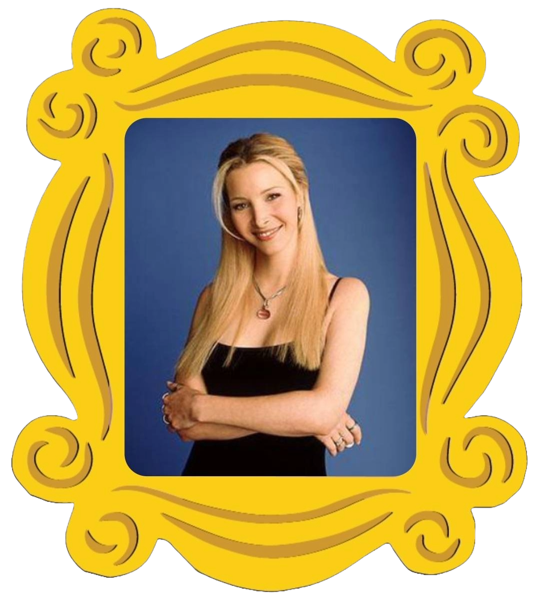

Rachel Green

Jennifer Aniston — Rachel Green Inicialmente uma garota mimada que foge do casamento e começa uma nova vida como garçonete. Ao longo da série, cresce profissionalmente no mundo da moda e vive um relacionamento intermitente com Ross.
Monica Geller

Courteney Cox — Monica GellerChef talentosa, obsessiva por limpeza e competitiva.Na adolescência era obesa. Irmã de Ross, acaba se casando com Chandler e juntos adotam gêmeos.
Phoebe Buffay

Lisa Kudrow — Phoebe BuffayMasseuse e cantora de músicas inusitadas (como "Smelly Cat"). Teve uma infância difícil, mas é espirituosa e generosa. Fica grávida de trigêmeos como barriga de aluguel para o irmão e, posteriormente, casa-se com Mike Hannigan (Paul Rudd).